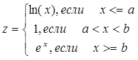
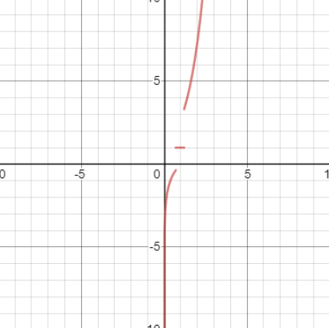
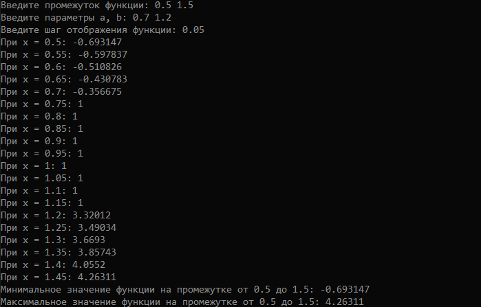
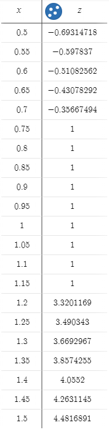

Цель работы
Целью данной лабораторной работы является задача овладеть практическими навыками разработки и программирования вычислительного процесса циклической структуры, сформировать навыки программирования алгоритмов разветвляющейся структуры, изучить операторы ветвления.
Выполнение работы
Моим заданием являлась реализация следующей зависимости:

График заданной функции имеет следующий вид:

Рис. 1: График функции.
И, чтобы определить ее значения на определенным промежутке с конкретным табулированием, я написал следующую программу на языке С++:
#include <iostream>
#include <limits>
#include <cmath>
int main()
{
setlocale(LC_ALL, "RUSSIAN");
double xBegin; // Начало промежутка
double xEnd; // Конец промежутка
std::cout << "Введите промежуток функции: ";
std::cin >> xBegin >> xEnd;
double a; // Параметры
double b; // вычисления
std::cout << "Введите параметры a, b: ";
std::cin >> a >> b;
double xStep; // Шаг функции
std::cout << "Введите шаг отображения функции: ";
std::cin >> xStep;
double xMin = std::numeric_limits<double>::max(); // Инициализация переменной максимально возможным значением типа
double xMax = std::numeric_limits<double>::min(); // Инициализация переменной минимально возможным значением типа
double functionValue;
for (; xBegin <= xEnd; xBegin += xStep)
{
if (xBegin <= a)
{
functionValue = log(xBegin);
}
else if (xBegin > a && xBegin < b)
{
functionValue = 1;
}
else if (xBegin >= b)
{
functionValue = exp(xBegin);
}
std::cout << "При x = " << xBegin << ": " << functionValue << std::endl;
// Обработка максимальных-минимальных значений
if (functionValue < xMin)
{
xMin = functionValue;
}
else if (functionValue > xMax)
{
xMax = functionValue;
}
}
std::cout << "Минимальное значение функции на промежутке: " << xMin << std::endl;
std::cout << "Максимальное значение функции на промежутке: " << xMax << std::endl;
std::cin.get();
std::cin.get();
}
Начальные условия программы мне были даны: ограничения функции(х1 и х2) - от 0.5 до 1.5, параметры a и b - 0.7 и 1.2 соответственно, шаг функции - 0.05. Введя все эти данные в консоль после запуска программы, я получил следующий результат:

Рис. 2: Результат работы программы.
Используя сервис desmos.com я построил график данной мне функции и отметил все точки в заданном диопазоне с шагом:

Рис. 3: Зависимости.
Результат ожидаем: все точки на графике соответствовали найденным программой значениям.

Рис. 4: График функции.
А как видно из тиблицы, максимальное и минимальное значение, выведенные в консоли, тоже верны.